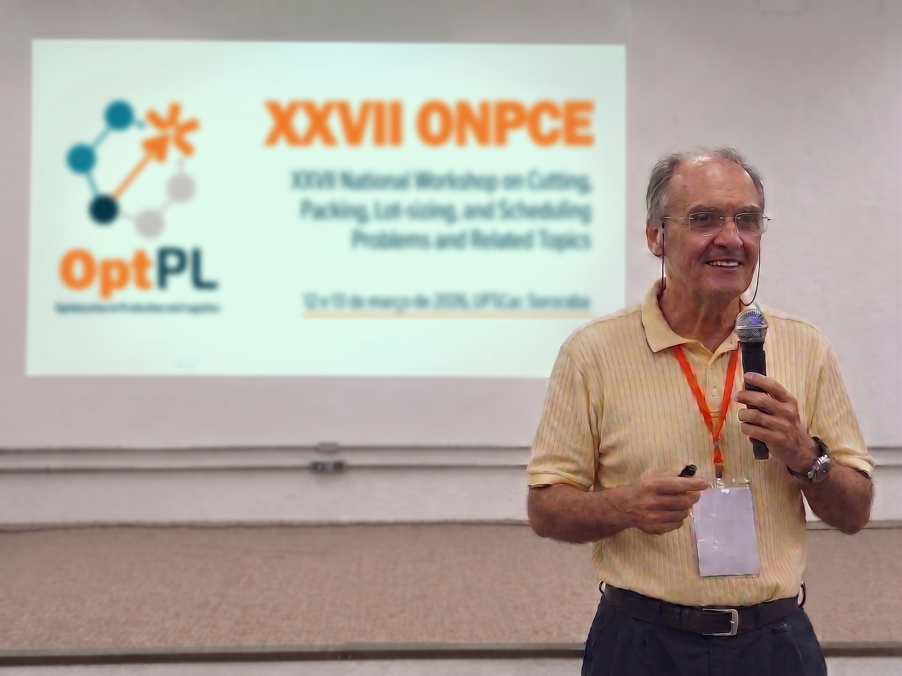

Pesquisa e Inovação
Pesquisadores do OptPL estabelecem novo "estado da arte" em otimização
Fruto de anos de colaboração, algoritmo da Unicamp supera métodos globais vigentes e cria um novo padrão de testes (benchmark) para o futuro da área.
Ler reportagem completa
Sustentabilidade
A matemática por trás do desperdício mínimo
Descubra como os algoritmos e a pesquisa operacional unem a eficiência industrial com a preservação ambiental de forma silenciosa.
Ler reportagem completa
Perfil e Trajetória
A trajetória de Reinaldo Morabito, coordenador do OptPL
Das obras da engenharia civil aos mainframes: conheça a história do professor da UFSCar e os 30 anos dedicados à pesquisa no Brasil.
Ler reportagem completa
Pesquisa e Inovação
Corte, estoque e logística: a busca pela integração na cadeia produtiva
Como o Estudo de Problemas Integrados busca o equilíbrio ótimo de toda a cadeia produtiva através de modelos matemáticos complexos.
Ler reportagem completa